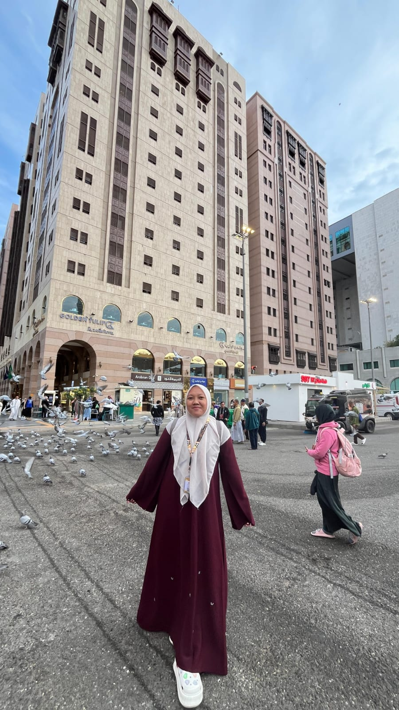

Klik untuk memulai

Surat Cinta
Klik untuk membuka
Doa Buat Seseorang Yang Aku Sayang
Klik untuk membuka
Untuk perempuan yang aku sayang, Dewi
Aku menulis surat ini bukan hanya dengan kata-kata, tapi juga dengan perasaan yang ada di hatiku. Kadang aku tidak selalu pandai mengungkapkan semuanya secara langsung, tapi aku ingin kamu tahu bahwa kamu sangat berarti bagiku. Setiap hari aku selalu berharap kamu baik-baik saja, tersenyum, dan menjalani hari dengan hati yang tenang.
Walaupun sekarang kita menjalani hubungan jarak jauh (LDR), perasaan sayangku ke kamu tidak pernah berkurang sedikit pun. Jarak memang memisahkan kita secara tempat, tapi tidak pernah memisahkan hatiku dari kamu. Justru jarak ini membuatku semakin sadar betapa berharganya kamu dalam hidupku.
Aku juga berharap kamu selalu kuat menjalani hari-harimu. Kalau ada masalah atau sesuatu yang membuatmu sedih, ingatlah bahwa kamu tidak sendirian. Aku selalu ada untukmu, walaupun mungkin hanya lewat pesan atau doa.
Semoga kamu juga bisa lebih sabar dan tidak mudah ngambek lagi ya. Bukan karena perasaanmu tidak penting, tapi karena aku ingin kita saling menjaga hati satu sama lain. Aku ingin hubungan kita dipenuhi dengan pengertian, kesabaran, dan rasa sayang yang terus tumbuh setiap hari.
Percayalah, walaupun kita LDR, aku tetap sayang kamu. Perasaan ini tetap sama, bahkan mungkin semakin besar seiring waktu. Aku ingin terus berjalan bersama kamu, saling menguatkan, dan saling menjaga sampai suatu hari nanti kita bisa lebih dekat tanpa jarak yang memisahkan.
Terima kasih sudah hadir dalam hidupku, Dewi. Kamu adalah seseorang yang sangat berarti bagiku.
Dengan penuh sayang,
Fikri Arsyad
Doa untuk Dewi
Ya Allah, aku berdoa untuk Dewi, perempuan yang sangat aku sayangi. Jagalah dia selalu di mana pun ia berada, kuatkan hatinya saat ia lelah, dan tenangkan jiwanya ketika ia sedih.
Ya Allah, berikan Dewi kesehatan, kebahagiaan, dan lindungi dia dari segala hal yang menyakitinya. Jika kami sedang berjauhan (LDR), dekatkan hati kami dengan kasih sayang dan saling pengertian.
Ya Allah, lembutkan hatinya agar tidak mudah marah atau ngambek, dan jadikan hubungan kami penuh kesabaran, kejujuran, dan cinta yang Engkau ridhoi.
Semoga Dewi selalu kuat menghadapi hari-harinya, selalu tersenyum, dan selalu ingat bahwa ada seseorang di sini yang sangat menyayanginya dan selalu mendoakannya. 🤍
Aamiin.